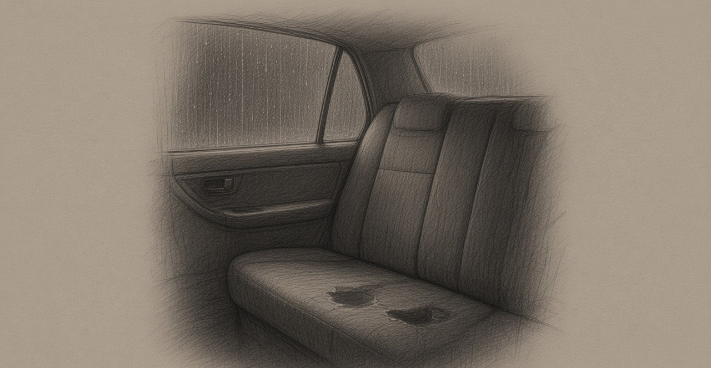
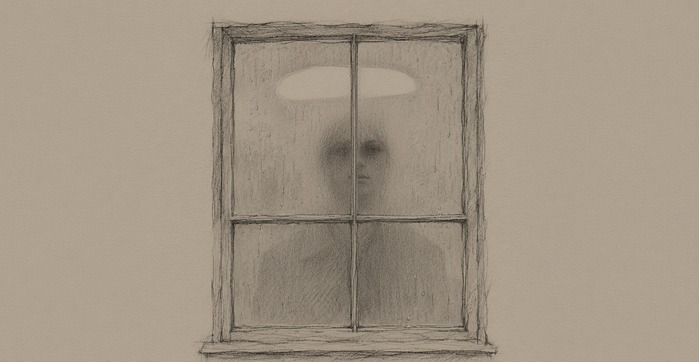
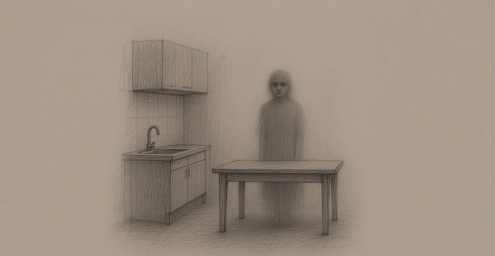
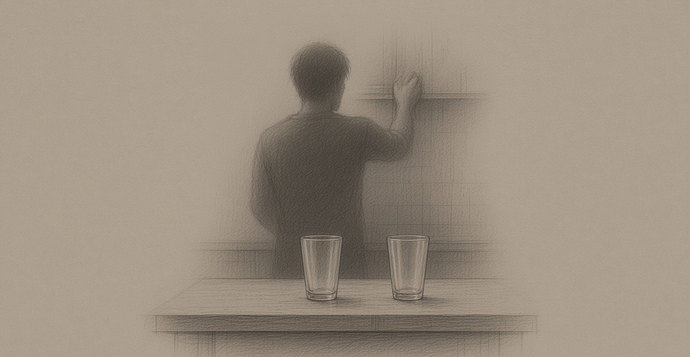
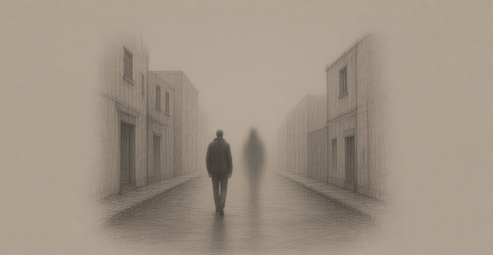
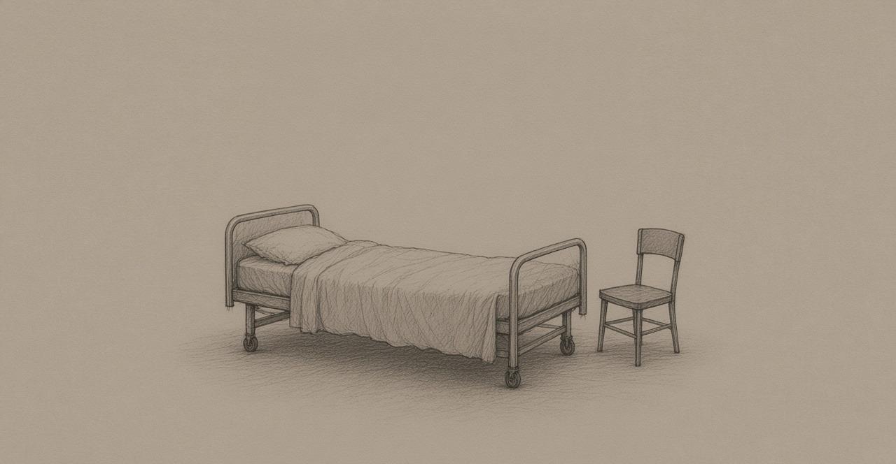

There you are. 😊
For a moment, I thought you weren't coming.
I've kept a little story for you. Nothing you need to prepare for. Just a quiet evening, and a few minutes we can spend together.
Make yourself comfortable. We have all evening.
If someone had asked what was unusual about that evening, the answer would have been simple.
Nothing.
There had been no warning, no strange encounter, no moment that seemed important enough to remember.
It was only afterward that certain things began to look different.
The back seat

He was at the sink trying to get two steel tumblers apart when he remembered the man from the bus stop. The man had been sitting next to him in the taxi on the night Tara was born.
He had taken that taxi alone.
He could remember that, too. The whole back seat to himself, sitting in the middle because that was the only dry part. The seat had been wet in the other memory as well. He’d moved over to give the man room and spent the rest of the ride with a cold stripe down the back of his shirt.
“Papa, can you come here?”
Tara was at the kitchen table doing fractions. He could hear her rubbing at the paper with the eraser. If she kept at it, she’d go right through.
“Give me a second.”
The fourth floor

He looked up. The man was in the kitchen window, on the other side of the glass. They lived on the fourth floor. A small oval had cleared in the condensation, a little above where the man’s eyes ought to have been.
A thought came to him then that made all three places come together. It was something so simple he could have said it out loud. He got as far as opening his mouth.
The man was in the doorway. Then he was close enough that the red mark where a shirt button had pressed into his neck was plainly visible. Then a bus went by inside the kitchen. A plastic bag was caught under one of the back wheels. He put a hand out for Tara and his fingers closed around a seat belt, still wet.
The next time he found the edge of the sink, he held on. For a while all he wanted was for the room to stay where it was.
When the room went still

And then it did.
The man stood by the table with his hands at his sides. From the sink, he looked straight at him. He had the odd feeling that his eyes were finally getting a chance to rest. He could still see the shirt, right down to the collar, but the longer he looked at it, the less he could have told you about its colour. He tried with the face. A loose thread hung from the collar. He tried to see where it joined the seam. There was a mouth. He followed the line of it for as long as he could, and then there was just the place where he’d been looking.
He stood there a little longer. The thing stood there with him. It took its time.
The tumblers came apart with a pop.
At the table Tara had rubbed a hole through the seven. Her father sat beside her and drew a new seven in the margin, where she still had room to work. Then he got up to put the kettle on. If she’d asked him what he’d been doing a moment ago, he’d have said he was getting the tumblers apart. He could have walked her through the whole evening and found something for every minute.
Two cups

He watched himself do it.
At first he thought he was still at the sink. He could see himself moving away from it, though, and there was no sink under his hand. When he tried to look down for it, all he could see was the back of his own shirt.
He called his own name, and then he called it as loud as he could. It took everything he had. He had no idea if he’d made a sound.
The man at the kettle lifted a hand.
For an instant he was sure he’d been heard. The hand went up to the cupboard, and then there were two cups on the counter.
The time it takes to turn

Years later, Tara would ring from a railway platform in a city where she’d just moved. She was trying to sound cheerful and her father walked from room to room with the phone against his ear until she told him what was wrong. Later still, a little boy would ride on his shoulders and pull his hair to make him go faster. By then there was so little hair left that it hurt. He used to let the boy do it until they got to the gate.
The one who could see him had only just called out. He was waiting for the man to do what anybody does when they hear their own name just behind them. Half a turn would do. He could manage the rest once they were looking at each other.
One morning the man from the kitchen was back at the bus stop. On his way to buy milk, Tara’s father told him the timetable on the sign was wrong. The man thanked him. A few days later it happened again, and he told him again, with the same little laugh about how long it took the city to change a sign. The man always watched him until he was out of sight.
A woman asked the man a question there once. She was holding her keys in one hand and feeling through her bag for them with the other. She stopped halfway through whatever she was saying. A moment later she found the keys and laughed to herself. She took a bus home. At her stop the driver had to open the doors a second time. She was standing right there.
There was somewhere for her now, too. From where she waited she could see the woman putting her keys on the hall table. She was close enough, she thought, to put a hand on her shoulder.
There were places like that behind people all over the city. Each held someone who could see only one person. They could have been packed wall to wall. To the one inside, there was just enough of a world for somebody to be leaving it.
A little longer

Toward the end, Tara’s father went into hospital. Tara, who was nearly sixty by then, sat by his bed and read him a message from the boy who used to pull his hair. The time between his breaths had been getting longer. She finished reading it anyway.
The one behind him watched until there was nothing left to watch.
He thought he might have caught him if he’d spoken a little sooner. He remembered somebody asking him to come and look at something. Maybe if he kept quiet he’d hear her ask again.
He could give it a second.
He’d only just got here.